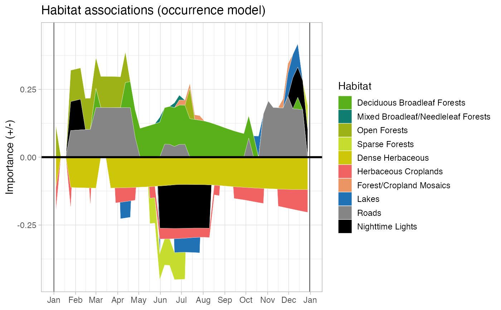

R/ebirdst-habitat.R
ebirdst_habitat.RdCombine the predictor importance (PI) and partial dependence (PD) data to provide an estimate of the importance and directionality of the land cover classes (i.e. habitat) used as covariates in the occurrence probability model. Note: This is one of, if not the most, computationally expensive operations in the package.
ebirdst_habitat(path, ext, pis = NULL, pds = NULL, stixels = NULL)
# S3 method for ebirdst_habitat
plot(x, n_predictors = 15, date_range = c(0, 1), ...)| path | character; directory that the Status and Trends data for a given
species was downloaded to. This path is returned by |
|---|---|
| ext | ebirdst_extent object; the spatiotemporal extent over which to
calculate the habitat associations. Note that temporal component of |
| pis, pds, stixels | as an alternative to providing the |
| x | ebirdst_habitat object; habitat relationships as calculated by
|
| n_predictors | number of predictors to include in the cake plot. The most important set of predictors will be chosen based on the maximum weekly importance value across the whole year. |
| date_range | the range of dates for plotting; a 2-element vector of the start and end dates of the date range, provided either as dates (Date objects or strings in ISO format "YYYY-MM-DD") or numbers between 0 and 1 representing the fraction of the year. When providing dates as a string, the year can be omitted (i.e. "MM-DD"). By default the full year of data are plotted. |
| ... | ignored. |
An ebirdst_habitat object, consisting of a data frame giving the
predictor importance and directionality for each predictor for each week of
the year. The columns are:
predictor: the name of the predictor
date: the week centroid expressed as a continuous value between 0-1.
See ebirdst_weeks to convert these values to ISO dates.
importance: the relative importance of the predictor, these values are
scaled so they sum to 1 within each week.
direction: the direction of the relationship, either 1 for a positive
relationship, -1 for a negative relationship, or NA when the direction of
the relationship is not significant.
The Status and Trends models use both effort (e.g. number of observers, length of checklist) and habitat (e.g. elevation, percent forest cover) covariates; for the full list consult ebirdst_predictors. This function calculates habitat associations only for the following covariates that most closely represent metrics of available habitat. In all cases these are calculated within a 1.5 km radius of each checklist:
Land cover: percent of each landcover class
Water cover: percent of each watercover class
Intertidal: percent cover of intertidal mudflats
Nighttime lights: total refelctance of nighttime lights
Roads: road density. There are 5 covariates distinguishing between different road types; however, these are grouped together for the sake of the habitat associations.
The plot() method can be used to produce a cake plot, a stacked area chart
showing habitat associations in which area indicates the importance of a
given land cover class and the position above or below the x-axis indicates
the direction of the relationship.
# \donttest{
# download example data
path <- ebirdst_download("example_data", tifs_only = FALSE)
#> Data already exists, use force = TRUE to re-download.
# or get the path if you already have the data downloaded
path <- get_species_path("example_data")
# define a spatial extent to calculate ppms over
bb_vec <- c(xmin = -86, xmax = -83, ymin = 42.5, ymax = 44.5)
e <- ebirdst_extent(bb_vec)
# compute habitat associations
habitat <- ebirdst_habitat(path = path, ext = e)
print(habitat)
#> # A tibble: 1,040 × 5
#> predictor date importance prob_pos_slope direction
#> * <chr> <dbl> <dbl> <dbl> <dbl>
#> 1 mcd12q1_lccs1_fs_c1_1500_pland 0.0096 0.000912 NA NA
#> 2 mcd12q1_lccs1_fs_c1_1500_pland 0.0288 0.000959 NA NA
#> 3 mcd12q1_lccs1_fs_c1_1500_pland 0.0481 0.00101 NA NA
#> 4 mcd12q1_lccs1_fs_c1_1500_pland 0.0673 0.00107 NA NA
#> 5 mcd12q1_lccs1_fs_c1_1500_pland 0.0865 0.00114 NA NA
#> 6 mcd12q1_lccs1_fs_c1_1500_pland 0.106 0.00120 NA NA
#> 7 mcd12q1_lccs1_fs_c1_1500_pland 0.125 0.00126 NA NA
#> 8 mcd12q1_lccs1_fs_c1_1500_pland 0.144 0.00132 NA NA
#> 9 mcd12q1_lccs1_fs_c1_1500_pland 0.164 0.00136 NA NA
#> 10 mcd12q1_lccs1_fs_c1_1500_pland 0.183 0.00139 NA NA
#> # … with 1,030 more rows
# produce a cake plot
plot(habitat)

# }